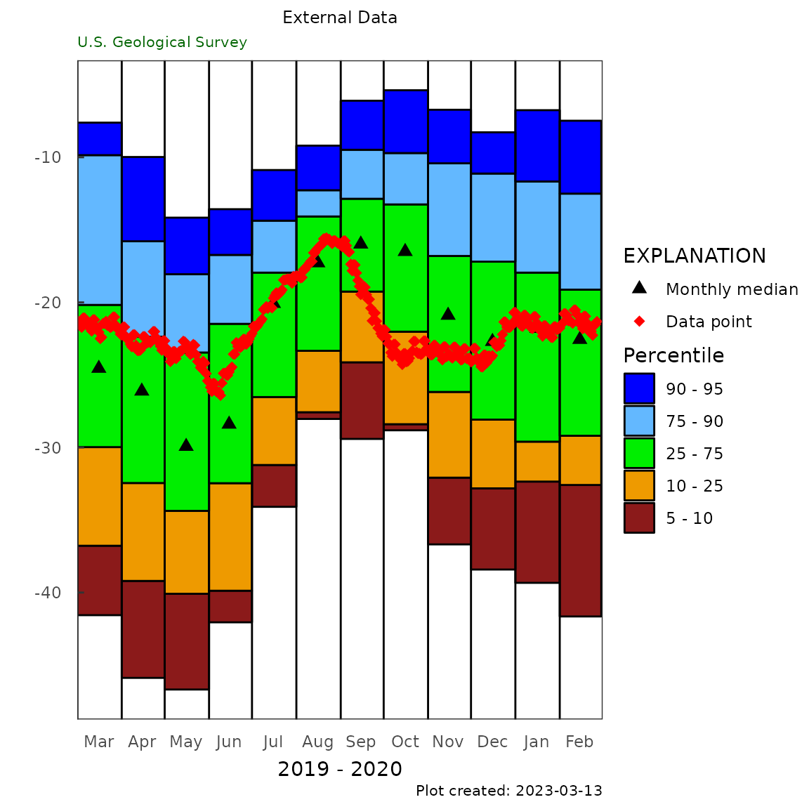
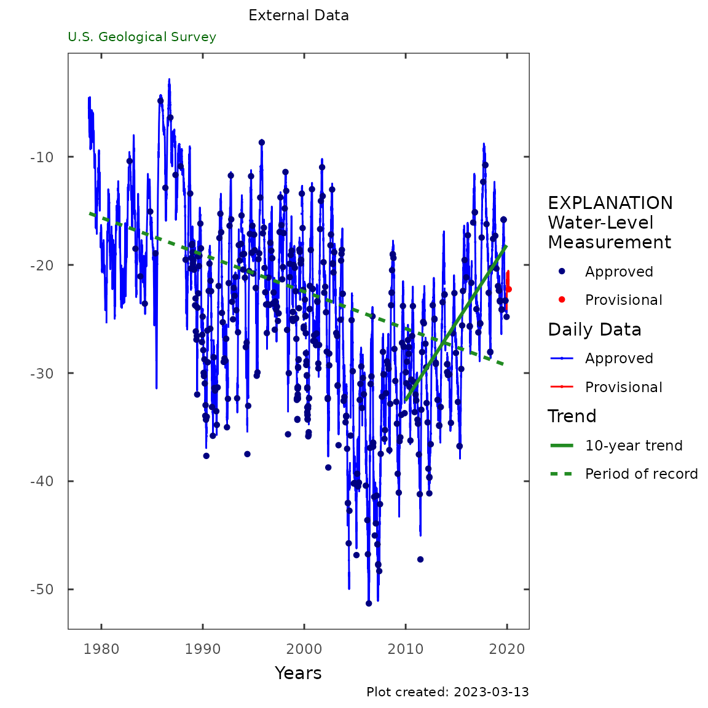
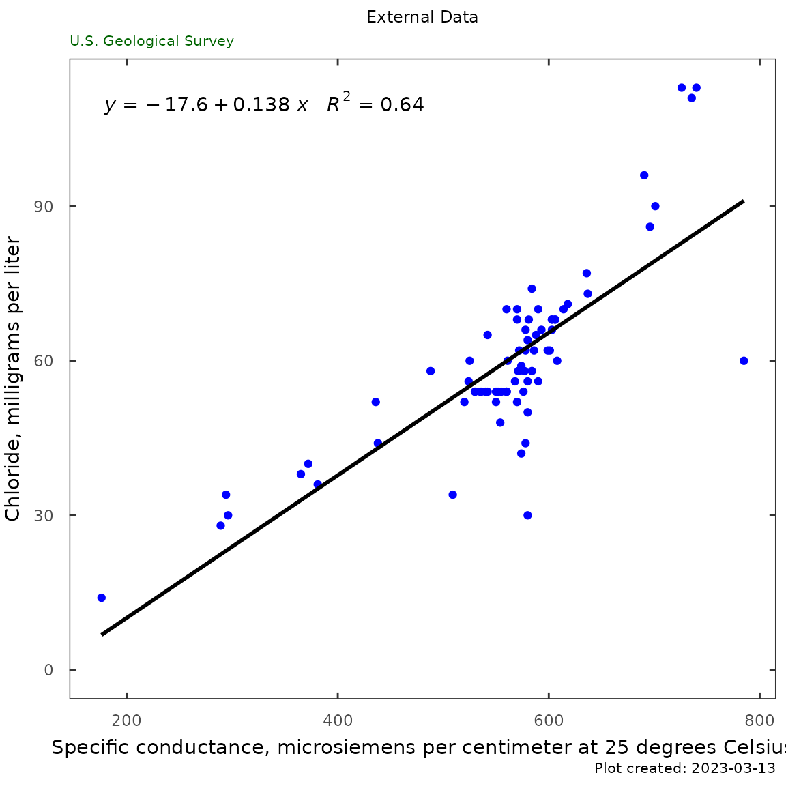
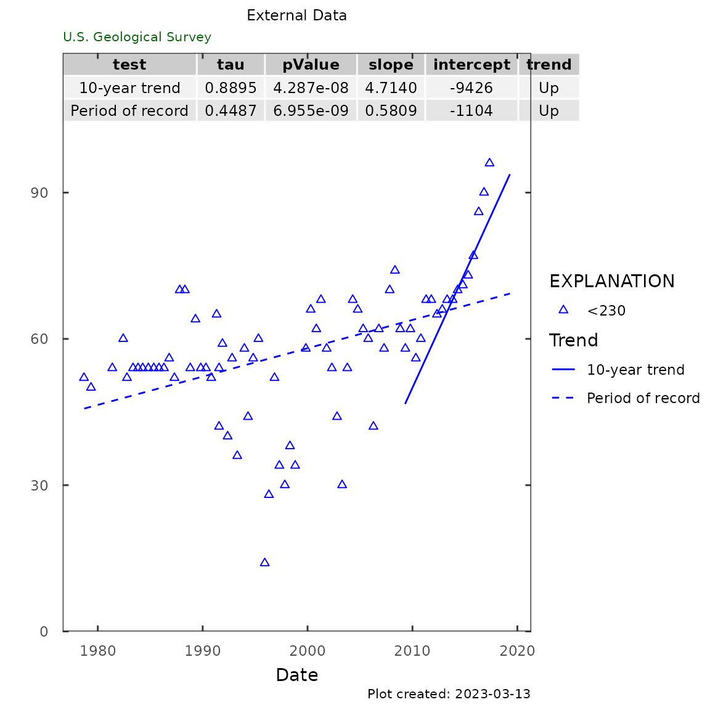

Most examples within HASP are given with data obtained via dataRetrieval functions. This article describes how to use external (non-dataRetrieval) data with HASP functions. Users can import their data into R in any of their favorite ways, and use the data frames in any of the scripted work flows. There are 3 main data types used in the HASP package: daily data (argument = gw_level_dv), field groundwater levels (argument = gwl), and water quality data (argument = qw_data).
The HASP package provides sample data named L2701_example_data. This data is also provided here, in a simplified Microsoft™ Excel file:
library(HASP)
system.file("extdata", "sample.xlsx", package = "HASP")We will use the readxl package to import this data for these examples. The main idea is import the data, figure out what columns you need, and call the functions appropriately.
This is how to import the sample file. This can be done in any number of ways. The point is to get 3 data frames in your R environment.
sample_data_path <- system.file("extdata", "sample.xlsx",
package = "HASP")
daily_data <- readxl::read_xlsx(path = sample_data_path,
sheet = "Daily")
names(daily_data)## [1] "Date" "Value" "Remark"## [1] "Date" "Value" "Remark"## [1] "Date" "Value" "Remark" "parameter"HASP functions
monthly_frequency_plot(gw_level_dv = daily_data,
date_col = "Date",
value_col = "Value",
approved_col = "Remark",
plot_title = "External Data")
gwl_plot_all(gw_level_dv = daily_data,
gwl_data = gwl_data,
date_col = c("Date", "Date"),
value_col = c("Value", "Value"),
approved_col = c("Remark", "Remark"),
plot_title = "External Data",
add_trend = TRUE)
The water-quality plots are less flexible, they require the data frame to have column names “sample_dt”, “parm_cd”, “result_va”, “remark_cd”. Renaming columns in R can be done in several ways, here is one using dplyr’s rename function:
library(dplyr)
qw_data <- qw_data %>%
rename(ActivityStartDateTime = Date,
ResultMeasureValue = Value) %>%
mutate(CharacteristicName = case_when(parameter %in%
c("99220", "00940") ~ "Chloride",
parameter %in%
c("90095", "00095") ~ "Specific conductance"))
Sc_Cl_plot(qw_data = qw_data,
"External Data")
trend_plot(qw_data,
plot_title = "External Data")